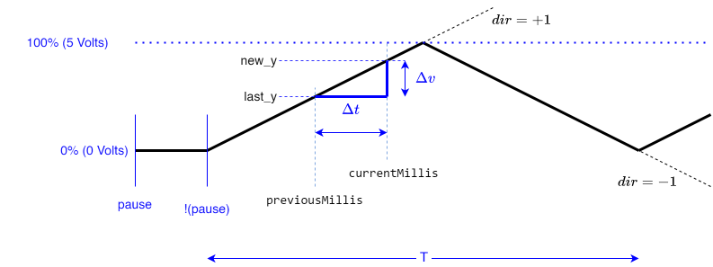
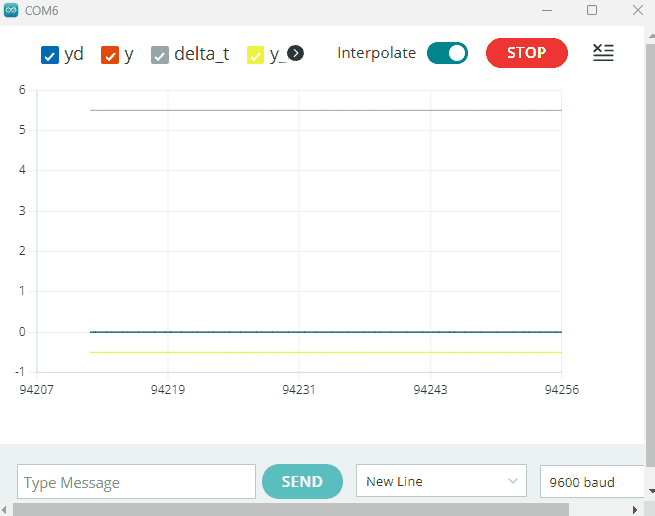

A ideia agora é gerar uma onda triangular que leve 5 segundos para variar a tensão de 0 até 5 Volts e que gaste outros tantos segundos para reduzir a tensão novamente para 0 Volts, totalizando um ciclo de dura 10 segundos, resultando numa onda triangular de 0,1 Hz.
Detalhe: um botão (push-button NA) deve permitir que o usuário escolha quando a onda varia sua amplitude. Ou seja, a cada vez que este botão é pressionado, a onda pode ser “pausada” ou retomada do ponto em que foi pausada.
Está previsto o uso de saída PWM filtrada do Arduíno para gerar uma tensão a mais próxima possível de um nível DC entre 0 à 5 Volts.
Para gerar a onda triangular foi previsto algo como:

Do esboço anterior se infere que:
e onde:
onde o valor 255 = 100% do PWM (ou % Volts) e o valor 5000 = T/2 (metade do período de tempo da onda, em milisegundos).
No momento de reiniciar a onda após um “pause”, é só fazer:
O código fica algo como:
/***************************************************
Teste do Serial Plotter da IDE 2.x com porta analógica
Entrada analógica monitorada = A0
botão para alternar entre geração/não de dados = pin 7, active LOW
A própria placa gera onda trinagular com ciclo de 0,1 Hz com
tensão (PWM filtrado) variando entre 0 à 5 Volts no pino 6
Sugere-se curto-circuitar a saída filtrada do PWM (pino 6) com a
entrada A0 do Arduino, para efeitos de teste.
Fernando Passold, em 17/11/2022, 18/11/2022
**************************************************/
#define pino_PWM 6 // pino da saída PWM (à ser filtrada)
#define pino_button 7 // pino onde está botão que alterna captura/não de dados
#define analog_pin A0 // entrada analógica usada
#define pino_led_satus 2 // led de "status", active HIGH
#define freq 0.1 // Freq da onda triangular em Hz
const float taxa = (255.0*2.0*freq)/1000.0; // taxa de subida/descida da onda triangular (valor %PWM/ms)
// Exemplo: Se freq = 0,1 Hz, T=1/01=10 segundos
// metada do ciclo da triangular T/2 = 5 segundos = 5000 ms
// taxa = 255.0/5000.0 = 0.051; // onda triangular deve atingir 100% duty-cycle (255) em 5 seg (5000 ms)
// para uso posterior em equação como:
// new_y = last_y + taxa*delta_t*dir
// dir=+1,-1 para indicar subida ou descida da onda triangular
// delta_t = passagem de tempo entre um ponto e outro da onda gerada (valor em ms)
const float converte_duty2volts = 5.0/256.0; // para converter duty-cycle 100% = 255
const float converte_AD2volts = 5.0/1024.0; // para converter de 2^10 (1024) = 5 Volts
float analog_value; // Valor original do AD (int) convertido para tensão em Volts
unsigned long currentMillis = 0; // "tempo" atual do sistema, t[k]
unsigned long previousMillis = 0; // "tempo" na amostra anterior, t[k-1]
unsigned long time_pressed = 0; // will store last time buttom was pressed
bool debouncing = false; // realizando debouncig ou não (habilita/desabilita leiutura chave)
const unsigned long time_debounce = 150; // periodo de tempo para debouncing de chave (milisegundos)
unsigned long delta_t; // diferença de passagem de tempo
bool pause = false; // pausar ou não onda triangular
bool stop = false; // parar onda trinagular (e zerar saída analógica/PWM)
float new_y; // novo valor (valor atual) amplitude onda triangular, y[k] (entre 0 à 255)
float last_y; // valor amostra passada da amplitude da trinagular, y[k-1]
int dir = 1; // indica "subida"(+1) ou descida (-1) da onda triangular
float y_volts; // valor convertido para tensão (0 ~ 5 Volts)
bool serial_out = true; // indica quando "imprimir" ou não info na porta serial
void prepara_onda_triangular(){
// prepara variáveis para iniciar onda do zero
dir = 1; // onda subindo
last_y = 0;
new_y = 0;
delta_t = 0;
currentMillis = millis();
previousMillis = currentMillis;
}
void update_led_status(){
// sinaliza "status" do sistema
if (pause) {
digitalWrite(pino_led_satus, LOW);
Serial.println("pause:");
serial_out = false;
}
if (!pause) {
digitalWrite(pino_led_satus, HIGH);
serial_out = true;
}
}
void update_triangular(){
// calcula próximo valor da onda triangular, atualiza amostra passada
delta_t = currentMillis - previousMillis; // calcula intervalo de tempo em comparação com amostra (ou pausa) anterior
new_y = last_y + taxa*delta_t*dir;
if (new_y>255) {
// momento de inverter ciclo da triangular, de subida para descida
dir = -1;
new_y = 255;
}
if (new_y<0) {
// momento de inverter ciclo da triangular, de descida para subida
dir = +1;
new_y = 0;
}
// joga valor calculado para "fora"
analogWrite(pino_PWM, new_y);
last_y = new_y; // deixa preparado para próximo ponto
previousMillis = currentMillis; // deixa pronto para cálculo do próximo ponto
y_volts = new_y*converte_duty2volts; // converte ssaída duty-cycle para Volts (atualiza valor)
}
void setup() {
// put your setup code here, to run once:
pinMode(pino_button, INPUT);
pinMode(pino_PWM, OUTPUT);
pinMode(pino_led_satus, OUTPUT);
digitalWrite(pino_led_satus, HIGH);
Serial.begin(9600);
delay(50);
Serial.println("Teste do Serial Plotter");
Serial.print(" freq="); Serial.println(freq);
Serial.print(" taxa="); Serial.println(taxa*1000);
Serial.print("converte_duty2volts="); Serial.println(converte_duty2volts*1000);
Serial.print(" converte_AD2volts="); Serial.println(converte_AD2volts*1000);
debouncing = false;
pause = true;
stop = false;
prepara_onda_triangular();
update_triangular();
digitalWrite(pino_led_satus, LOW);
update_led_status();
serial_out = false;
}
void loop() {
// put your main code here, to run repeatedly:
currentMillis = millis();
if (!debouncing) {
if (digitalRead(pino_button) == LOW) {
// deveria deixar passar uns 50 ~ 150 ms a titulo de debouncing do botão
// não podemos usar delay(100) porque influencia função analogWrite() - gerador PWM "interno" do Arduino
debouncing = true;
time_pressed = millis();
// antes de atualizar pause, verifica se onda triangular está sendo re-iniciada
// pause --> !pause; deve então garantir delta_t = 0
if (pause){
previousMillis = currentMillis;
}
// atualiza pause
pause = !pause; // simplesmente alterna estado
update_led_status();
}
}
if (debouncing) {
// Significa que estamos dentro de periodo de debouncing em que a chave é ignorada
// falta verificar se passou tempo para "desligar" o debouncing
if (currentMillis - time_pressed >= time_debounce) {
debouncing = false; // habilita novas leituras do botão
}
}
if (!pause) update_triangular();
// lendo sinal analógico
analog_value = converte_AD2volts*(float)analogRead(analog_pin);
// if (serial_out){ // <-- imprime apenas fora do pause
Serial.print("y_max:"); Serial.print(5.5); // apenas "traço superior"
Serial.print("\t");
if (pause){
Serial.print(" P ");
}
Serial.print("\t");
Serial.print("delta_t:"); Serial.print(delta_t/10.0);
Serial.print("\t");
Serial.print("yd:"); Serial.print(y_volts);
Serial.print("\t");
Serial.print("y:"); Serial.print(analog_value);
Serial.print("\t");
Serial.print("y_min:"); Serial.println(-0.5); // apenas "traço inferior"
// }
}
Saída no Monitor Serial:
21:20:42.656 -> freq=0.10
21:20:42.689 -> taxa=51.00
21:20:42.722 -> converte_duty2volts=19.53
21:20:42.754 -> converte_AD2volts=4.88
21:20:42.787 -> pause:
21:20:42.787 -> y_max:5.50 P delta_t:0.00 yd:0.00 y:0.00 y_min:-0.50
21:20:42.853 -> y_max:5.50 P delta_t:0.00 yd:0.00 y:0.00 y_min:-0.50
21:20:42.886 -> y_max:5.50 P delta_t:0.00 yd:0.00 y:0.00 y_min:-0.50
21:20:42.951 -> y_max:5.50 P delta_t:0.00 yd:0.00 y:0.00 y_min:-0.50
21:20:43.016 -> y_max:5.50 P delta_t:0.00 yd:0.00 y:0.00 y_min:-0.50
21:20:43.082 -> y_max:5.50 P delta_t:0.00 yd:0.00 y:0.00 y_min:-0.50
21:20:45.933 -> y_max:5.50 P delta_t:0.00 yd:0.00 y:0.00 y_min:-0.50
21:20:45.998 -> y_max:5.50 P delta_t:0.00 yd:0.00 y:0.00 y_min:-0.50
21:20:46.031 -> y_max:5.50 delta_t:0.00 yd:0.00 y:0.00 y_min:-0.50
21:20:46.096 -> y_max:5.50 delta_t:5.40 yd:0.05 y:0.00 y_min:-0.50
21:20:46.162 -> y_max:5.50 delta_t:5.50 yd:0.11 y:0.05 y_min:-0.50
21:20:46.195 -> y_max:5.50 delta_t:5.60 yd:0.16 y:0.10 y_min:-0.50
21:20:46.260 -> y_max:5.50 delta_t:5.50 yd:0.22 y:0.17 y_min:-0.50
21:20:46.327 -> y_max:5.50 delta_t:5.50 yd:0.27 y:0.24 y_min:-0.50
21:20:48.915 -> y_max:5.50 delta_t:5.50 yd:2.85 y:2.75 y_min:-0.50
21:20:48.980 -> y_max:5.50 delta_t:5.40 yd:2.91 y:2.71 y_min:-0.50
21:20:49.013 -> pause:
21:20:49.013 -> y_max:5.50 P delta_t:5.40 yd:2.91 y:2.80 y_min:-0.50
21:20:49.078 -> y_max:5.50 P delta_t:5.40 yd:2.91 y:2.90 y_min:-0.50
21:20:58.720 -> y_max:5.50 delta_t:0.00 yd:4.83 y:4.84 y_min:-0.50
21:20:58.752 -> y_max:5.50 delta_t:5.50 yd:4.88 y:4.82 y_min:-0.50
21:20:58.818 -> y_max:5.50 delta_t:5.40 yd:4.94 y:4.88 y_min:-0.50
21:20:58.883 -> y_max:5.50 delta_t:5.60 yd:4.98 y:4.93 y_min:-0.50 <-- pico máximo
21:20:58.949 -> y_max:5.50 delta_t:5.50 yd:4.93 y:4.99 y_min:-0.50
21:20:58.982 -> y_max:5.50 delta_t:5.50 yd:4.87 y:4.94 y_min:-0.50
21:20:59.046 -> y_max:5.50 delta_t:5.60 yd:4.82 y:4.87 y_min:-0.50
21:20:59.113 -> y_max:5.50 delta_t:5.50 yd:4.76 y:4.80 y_min:-0.50
21:20:59.146 -> y_max:5.50 delta_t:5.40 yd:4.71 y:4.73 y_min:-0.50
21:20:59.211 -> y_max:5.50 delta_t:5.50 yd:4.65 y:4.73 y_min:-0.50
21:21:24.449 -> y_max:5.50 delta_t:5.50 yd:0.15 y:0.19 y_min:-0.50
21:21:24.488 -> y_max:5.50 delta_t:5.60 yd:0.09 y:0.15 y_min:-0.50
21:21:24.548 -> y_max:5.50 delta_t:5.50 yd:0.04 y:0.09 y_min:-0.50
21:21:24.614 -> y_max:5.50 delta_t:5.50 yd:0.00 y:0.03 y_min:-0.50
21:21:24.646 -> y_max:5.50 delta_t:5.50 yd:0.05 y:0.00 y_min:-0.50 <-- pico mínimo
21:21:24.711 -> y_max:5.50 delta_t:5.50 yd:0.11 y:0.04 y_min:-0.50
21:21:24.776 -> y_max:5.50 delta_t:5.50 yd:0.16 y:0.10 y_min:-0.50
21:21:24.810 -> y_max:5.50 delta_t:5.50 yd:0.22 y:0.17 y_min:-0.50
21:21:24.875 -> y_max:5.50 delta_t:5.60 yd:0.27 y:0.23 y_min:-0.50
Sinal gerado (IDE 2.x do Arduíno: Ferramentas >> Serial Plotter):

Observações:
Fernando Passold, 17/11/2022, 19/11/2022.